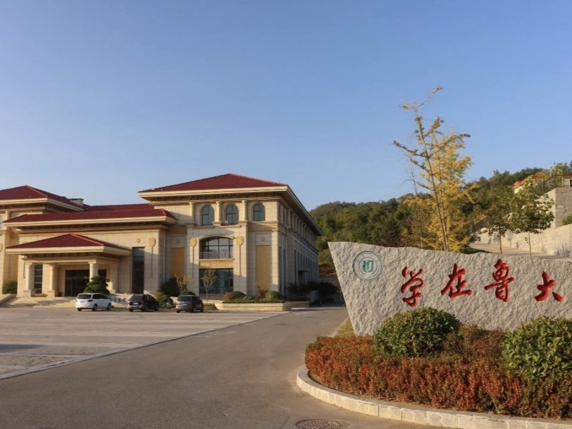
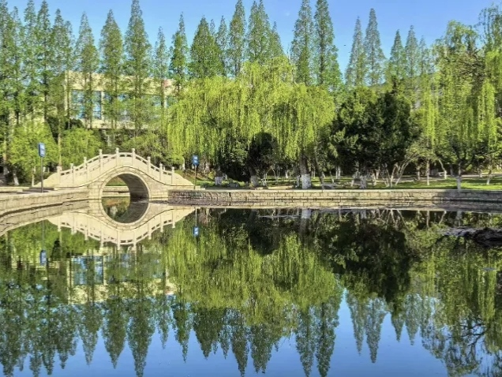
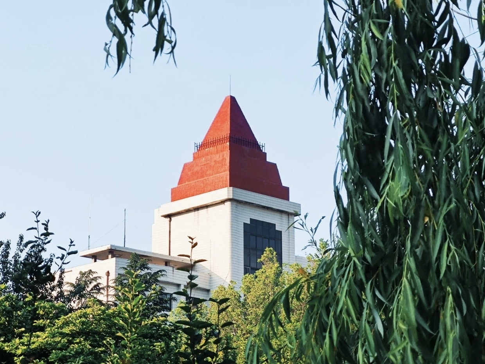
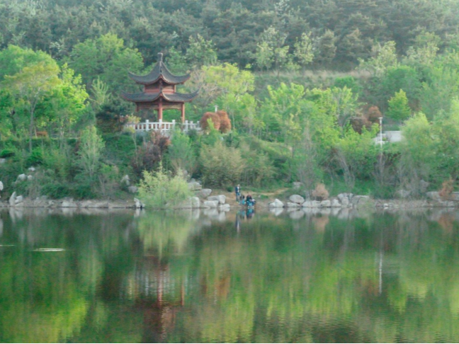

春风渡海穿城，裹挟着芝罘湾的温润水汽，悄然漫入鲁东大学的校园，最先在镜心湖岸晕开浓淡相宜的春景。这方湖水似被春日精心擦拭过的明镜，澄澈得能映出天空的流云、岸边的草木，甚至学子鬓边的春风。湖面上，薄冰早已消融，春水泛着浅蓝的光晕，偶尔有锦鲤摆尾游过，橙红、银白的身影划破水面，搅碎了倒映的柳影与花光，漾开一圈圈细密的波纹，而后又渐渐归于平静，让湖面重归澄澈。岸边的垂柳是春日最殷勤的信使，嫩黄的新芽从褐色的枝条里钻出来，缀成一串串柔软的流苏，垂落至水面，风一吹便轻轻摇曳，似在与湖水低语，又似在梳理水中的云鬓。柳荫下，樱花与紫叶李次第绽放，粉白的花瓣层层叠叠，压弯了枝头，微风拂过，花瓣簌簌飘落，有的落在湖面，随波逐流，成了承载春讯的小舟；有的铺在青石小径上，织就一条浪漫的花径。林间的鸟鸣清脆婉转，此起彼伏，与湖畔学子的轻声笑语交织在一起，伴着草木新生的清甜气息，弥漫在整个镜心湖区域，让人每走一步，都能感受到春日的蓬勃生机，仿佛连空气都被染上了鲜活的色彩，吸一口便觉心脾舒畅。
乳子湖的春日，是一幅动静相宜的山水长卷，藏着鲁大最温柔的芳华。环湖而植的草木褪去了冬日的枯黄，尽数换上了嫩绿的新装，新草从泥土里探出脑袋，带着湿润的泥土气息，铺满了湖堤，踩上去软乎乎的，似在抚摸大地的肌肤。岸边的迎春藤爬满了石栏，明黄的小花一串挨着一串，像撒在绿毯上的碎金，耀眼夺目；不远处的桃树枝头也缀满了花苞，有的含苞待放，似娇羞的少女；有的已然绽放，粉嫩嫩的花瓣层层舒展，露出嫩黄的花蕊，引得蜂蝶环绕，翩跹起舞。朱红的湖心亭临水而立，亭角翘起，倒映在碧波之中，与摇曳的柳丝、浮动的花影相映成趣，构成一幅绝美的水墨丹青。暖阳斜斜洒在湖面上，波光粼粼如碎金闪烁，微风拂过，湖面泛起层层涟漪，将光影揉碎，又重新拼凑出斑斓的模样。木栈道蜿蜒曲折，沿着湖岸延伸，学子们或并肩漫步，轻声交谈；或独自静坐，捧着书卷，任春风拂过发梢，任花香萦绕鼻尖。偶尔有白鹭轻点湖面，衔走一缕波光，而后振翅远去，留下一圈圈余波，为这静谧的春日增添了几分灵动。乳子湖的春，是温柔的，是鲜活的，是让人心生眷恋的，每一处景致都似精心雕琢，却又浑然天成，将春日的美好尽数铺展在眼前。
春日的鲁大学术中心，在繁花与暖阳的映衬下，褪去了往日的肃穆，多了几分温柔与灵动，却依旧不失学术殿堂的庄重与厚重。米白色的建筑墙体干净整洁，在春日的阳光下泛着柔和的光晕，门前两排玉兰树悄然绽放，洁白的花瓣硕大饱满，裹着清甜的香气，在春风里微微颤动，似坠在枝头的月光，又似守护学术殿堂的精灵。建筑的玻璃幕墙通透明亮，将蓝天、白云、新绿与春花尽数收纳其中，让严谨的学术空间与自然春日无缝衔接。走进大厅，阳光透过落地玻璃窗斜斜洒入，落在光洁的地板上，映出斑驳的花影，也映着学子们匆匆的身影。阅览室里，安静得只能听见翻书的沙沙声与笔尖划过纸张的轻响，学子们伏案苦读，眉头微蹙，眼神专注而坚定，他们或沉浸在专业知识的海洋里，或钻研着深奥的学术问题，春日的阳光为他们镀上了一层温柔的金边，让逐梦的身影愈发清晰。走廊里，偶尔有学子驻足讨论，声音轻柔却充满热忱，思想的火花在春风里碰撞，与窗外的花香交织在一起，弥漫在整个学术中心。建筑旁的花木扶苏，新枝缠绕着檐角，嫩绿的叶片与洁白的玉兰花相映成趣，春光为这座严谨的学术殿堂添上了温柔的底色，百年文脉在春日里静静流淌，滋养着每一份青春理想，让学术与春光相融，书写着鲁大独有的人文芳华。
红顶楼在春日的光影里，愈发显得古朴而有风骨，它像一位沉默的老者，见证着鲁大的百年变迁，也守护着一代又一代学子的青春梦想。古朴的红墙经过岁月的沉淀，愈发温润厚重，砖缝间钻出的新草，为红色的墙体添上了一抹灵动的绿意，相映成趣。屋顶的瓦片排列整齐，在春日的阳光下泛着淡淡的光泽，檐角微微翘起，似要触碰云端的春日。飞鸟掠过檐角，翅膀划破湛蓝的天空，留下一道浅浅的痕迹，而后远去，与远处的山海融为一体。楼旁的草木葱茏茂盛，新枝绕檐而生，枝头的春花次第绽放，粉的、白的、黄的，点缀在翠绿的枝叶间，让古朴的建筑多了几分春日的灵动与俏皮。春日的余晖洒在红顶楼上，为墙体镀上一层温暖的橙红，光影交错间，仿佛能看见百年前学子们在此求学的身影，听见他们朗朗的书声。如今，新一代的鲁大学子依旧在这里汲取知识、追逐梦想，晨读的声音与春风相伴，讨论的热忱与花香相融，让这座承载着学府过往与今朝的建筑，始终洋溢着少年朝气。红顶楼的春，是历史与现实的交织，是古朴与灵动的碰撞，春光为它拂去岁月的尘埃，让百年文脉在春日里灼灼生辉，继续滋养着每一个逐梦的青春。



